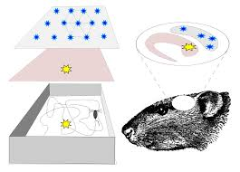

Biography
Norwegian neuroscientist whose pioneering brain research earned her the 2014 Nobel Prize in Physiology or Medicine. She became the Director of the Kavli Institute for Systems Neuroscience and Centre for the Biology of Memory in 2007.
The Mosers investigated the neural networks of the hippocampus, attempting to identify the mechanism underlying the generation of cortical (spatial) maps. They began by examining the effects of hippocampal lesions on the activity of place cells, which had been reported by O’Keefe and his student Jonathan O. Similar to O’Keefe’s findings with place cells, the Mosers found that cells in the dMEC became active in relation to an animal’s position in its environment. But, unlike the activity of place cells, the activity of the cells that the Mosers observed occurred in a strikingly regular pattern: as rats ran freely in their enclosures, spikes of activity at each electrode were not only evenly spaced but also similar in direction and size. The regular activity formed a grid of equilateral, tessellating triangles, as revealed by spatial analyses, which inspired the name grid cell. Maps are made through grid cells. Grid cells are a type of cell that helps the brain navigate. They are what help us create this type of GPS system when we go somewhere new or when we revisit a familiar place.
In later work, the Mosers discovered additional cells in the dMEC that signaled spatial information, including head direction cells, which fired preferentially in response to an animal’s head direction, and border cells, which transmitted information about the boundaries of an animal’s environment. They also found that grid cells, head direction cells, and border cells interacted with place cells in the hippocampus to determine orientation and navigation. The spatial representation system was described as an “inner GPS.”
May-Britt Moser is the director of the Centre for Neural Computation at the Norwegian University of Science and Technology (NTNU) .May-Britt and her husband are discovering how those memories are possible. Grid cells have a huge impact on memory which is why her studies on memory are so important. Further research led her to publish a paper on how smells activate memory. She also studies how stress causes memory loss. May-Britt and her husband are still discovering secrets about the brain today.
She was awarded a Nobel prize for Physiology and Medicine. She earned the Nobel Prize along with her colleagues because of the “concerning the neural systems that underlie spatial representation in the mammalian brain.” She was a recipient of multiple awards, notably the 2013 Louisa Gross Horwitz Prize for Biology or Biochemistry (shared with Edvard Moser and O’Keefe ).